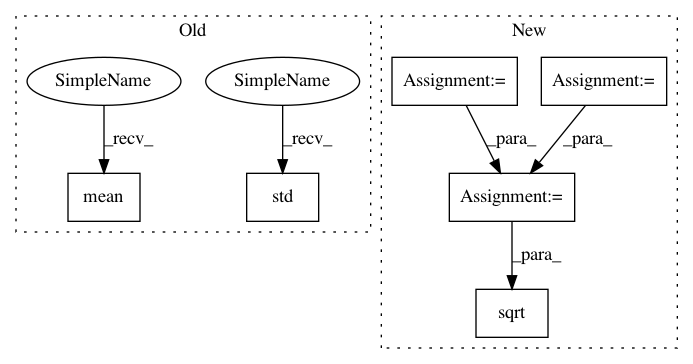

2f1f42eeb68c64ff991c0ae2e8253a9305e90f74,autokeras/hypermodel/processor.py,Normalize,fit,#Normalize#Any#Any#,82
Before Change
def fit(self, hp, data):
axis = tuple(range(len(data.shape) - 1))
self.mean = np.mean(data,
axis=axis,
keepdims=True).flatten()
self.std = np.std(data,
axis=axis,
keepdims=True).flatten()
After Change
self.std = None
def fit(self, hp, data):
shape = utils.dataset_shape(data)
axis = tuple(range(len(shape) - 1))
def sum_up(old_state, new_elem):
return old_state + new_elem
def sum_up_square(old_state, new_elem):
return old_state + tf.square(new_elem)
num_instance = data.reduce(np.float64(0), lambda x, _: x + 1)
total_sum = data.reduce(np.float64(0), sum_up) / num_instance
self.mean = tf.reduce_mean(total_sum, axis=axis)
total_sum_square = data.reduce(np.float64(0), sum_up_square) / num_instance
square_mean = tf.reduce_mean(total_sum_square, axis=axis)
self.std = tf.sqrt(square_mean - tf.square(self.mean))
def transform(self, hp, data):
Transform the test data, perform normalization.
In pattern: SUPERPATTERN
Frequency: 3
Non-data size: 6
Instances
Project Name: jhfjhfj1/autokeras
Commit Name: 2f1f42eeb68c64ff991c0ae2e8253a9305e90f74
Time: 2019-07-04
Author: jhfjhfj1@gmail.com
File Name: autokeras/hypermodel/processor.py
Class Name: Normalize
Method Name: fit
Project Name: jhfjhfj1/autokeras
Commit Name: 2f1f42eeb68c64ff991c0ae2e8253a9305e90f74
Time: 2019-07-04
Author: jhfjhfj1@gmail.com
File Name: autokeras/hypermodel/processor.py
Class Name: Normalize
Method Name: fit
Project Name: nilearn/nilearn
Commit Name: 6704c535b8c59ab3b9b98c0489a051654c1ee727
Time: 2013-04-05
Author: philippe.gervais@inria.fr
File Name: nisl/signals.py
Class Name:
Method Name: _standardize